Chapitre 11 Regroupement
L’une des applications des matrices d’association est le regroupement. Le regroupement met en évidence les structures des données en partitionnant soit les objets, soit les descripteurs. Les objets similaires sont ainsi combinés en groupes, ce qui permet d’identifier les distinctions - ou les contrastes - entre les groupes. L’un des objectifs des écologistes pourrait être de diviser un ensemble de sites en groupes en fonction de leurs conditions environnementales ou de la composition de leur communauté.
Les résultats des regroupements sont souvent représentés sous forme de dendrogrammes (arbres), où les objets s’agglomèrent en groupes. Il existe plusieurs familles de méthodes de regroupement, mais pour les besoins de cet atelier, nous présenterons une vue d’ensemble de trois méthodes de regroupement agglomératif hiérarchique : le lien simple, le lien complet et le regroupement à variance minimale de Ward. *Voir le chapitre 8 de Legendre et Legendre (2012) pour plus de détails sur les différentes familles de méthodes de clustering.
Dans les méthodes hiérarchiques, les éléments des clusters (ou groupes) inférieurs deviennent membres de clusters plus importants, de rang supérieur, par exemple espèce, genre, famille, ordre. Avant de procéder au regroupement, il faut créer une matrice d’association entre les objets. La matrice de distance est le choix par défaut des fonctions de regroupement dans R. La matrice d’association est d’abord triée par ordre de distance croissante (ou de similarités décroissantes). Ensuite, les groupes sont formés hiérarchiquement en suivant des règles spécifiques à chaque méthode.
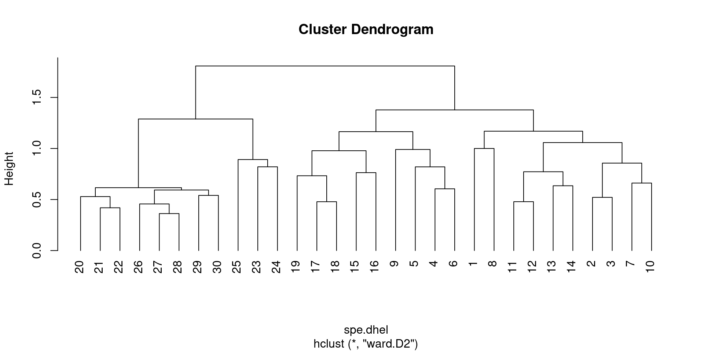
R dispose de plusieurs fonctions intégrées pour le calcul des clusters agglomérés et la visualisation des résultats. Voici quelques-unes des fonctions les plus couramment utilisées :
- La fonction
hclust()du packagestats: Cette fonction calcule le regroupement hiérarchique à l’aide d’une variété de méthodes de liaison, y compris la méthode unique, la méthode complète, la méthode moyenne et la méthode de la variance minimale de Ward. La sortie est un objetdendrogrammequi peut être tracé à l’aide de la fonctionplot(). - La fonction
agnes()du paquetcluster: Cette fonction calcule également le clustering hiérarchique en utilisant plusieurs méthodes de liaison, mais elle peut traiter des ensembles de données plus importants quehclust(). La sortie est un objet de la classe “agnes” qui peut être tracé en utilisant la fonctionplot(). - Le paquet
dendextend(): Ce paquet fournit plusieurs fonctions pour manipuler et visualiser les dendrogrammes, y compriscolor_branches(),rotate()etcutree(). - Fonction
ggdendro()du paquetggdendro: Cette fonction crée un dendrogramme en utilisant la syntaxeggplot2et offre plus d’options de personnalisation que la fonction de baseplot().
Ci-dessous, nous allons apprendre plusieurs types d’algorithmes de clustering, tout en appliquant la fonction la plus simple de R pour les produire, hclust().
11.1 Regroupement agglomératif à lien unique
Le regroupement agglomératif à lien unique est un algorithme de regroupement hiérarchique qui fusionne itérativement les deux groupes les plus proches en fonction de la distance minimale entre leurs membres les plus proches. Les étapes de cet algorithme sont les suivantes
- Commencez par assigner chaque observation à sa propre grappe.
- Calculer la distance entre toutes les paires de grappes à l’aide d’une mesure de distance choisie (par exemple, la distance euclidienne).
- Fusionner les deux grappes les plus proches en une seule grappe.
- Recalculer la distance entre la nouvelle grappe et toutes les grappes restantes.
- Répéter les étapes 3 et 4 jusqu’à ce que toutes les observations appartiennent à une seule grappe ou jusqu’à ce qu’un nombre prédéfini de grappes soit atteint.
Dans la classification agglomérative à lien unique, la distance entre deux grappes est définie comme la distance minimale entre deux points quelconques des grappes. C’est la raison pour laquelle on l’appelle aussi le “plus proche voisin” ou le “single linkage”.
L’un des inconvénients du regroupement agglomératif à lien unique est qu’il peut produire des grappes longues et traînantes qui ne représentent pas des groupes bien définis, également connues sous le nom de phénomène de chaînage. Ce phénomène peut être surmonté en utilisant d’autres critères de liaison tels que la liaison complète, la liaison moyenne ou la liaison de Ward.
# générer des échantillons de données
set.seed(123)
x <- matrix(rnorm(20), ncol = 2)
# effectuer un clustering agglomératif à lien unique
hc <- hclust(dist(x), method = "single")
# tracer le dendrogramme
plot(hc, main = "Dendrogramme du regroupement agglomératif à lien unique",
hang = -1)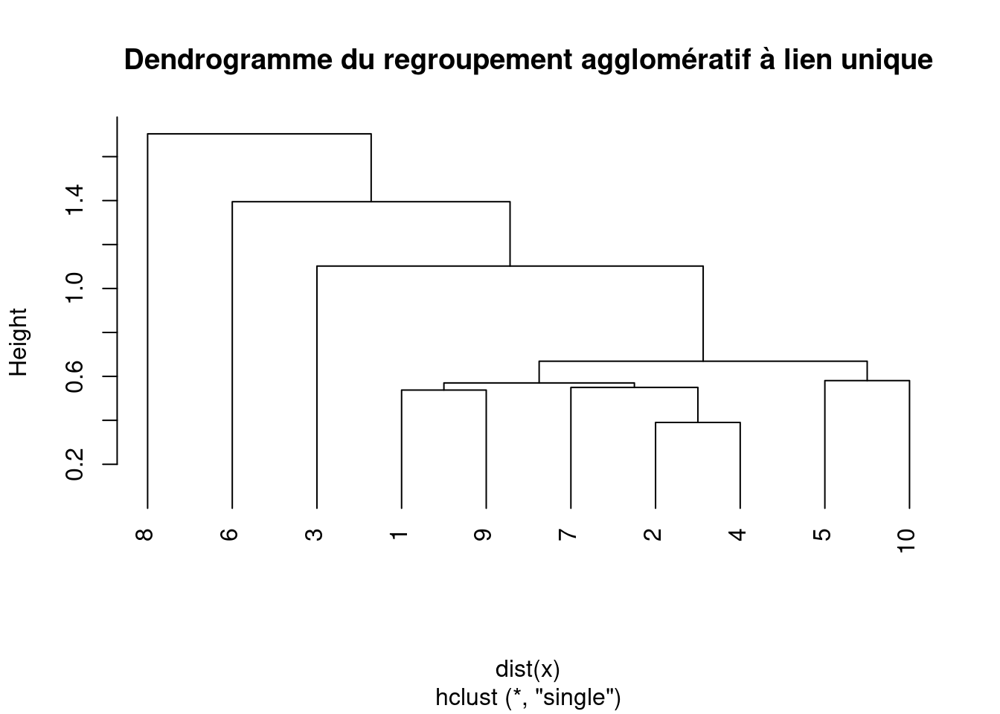
11.2 Regroupement agglomératif à liens complets
Le regroupement agglomératif à liens complets est un autre algorithme de regroupement hiérarchique qui fusionne itérativement les deux groupes les plus proches sur la base de la distance maximale entre leurs membres les plus éloignés.
Les étapes de l’algorithme de regroupement agglomératif à liaison complète sont les suivantes :
- Commencer par assigner chaque observation à sa propre classe.
- Calculer la distance entre toutes les paires de groupes à l’aide d’une mesure de distance choisie (par exemple, la distance euclidienne).
- Fusionner les deux groupes les plus proches en un seul groupe.
- Recalculer la distance entre la nouvelle grappe et toutes les grappes restantes.
- Répéter les étapes 3 et 4 jusqu’à ce que toutes les observations appartiennent à une seule grappe ou jusqu’à ce qu’un nombre prédéfini de grappes soit atteint.
- Dans le cas de la classification agglomérative par liens complets, la distance entre deux grappes est définie comme la distance maximale entre deux points quelconques des grappes. C’est la raison pour laquelle on l’appelle aussi le “plus lointain voisin” ou le “lien complet”.
Par rapport au regroupement agglomératif à lien unique, le regroupement à lien complet tend à produire des grappes plus compactes et sphériques, moins sujettes au phénomène de chaînage. Toutefois, il est plus sensible aux valeurs aberrantes et peut produire des grappes déséquilibrées en cas de valeurs extrêmes ou de bruit dans les données.
# effectuer un clustering agglomératif à liens complets
hc <- hclust(dist(x), method = "complete")
# tracer le dendrogramme
plot(hc, main = "Dendrogramme de l'agglomération de liens complète",
hang = -1)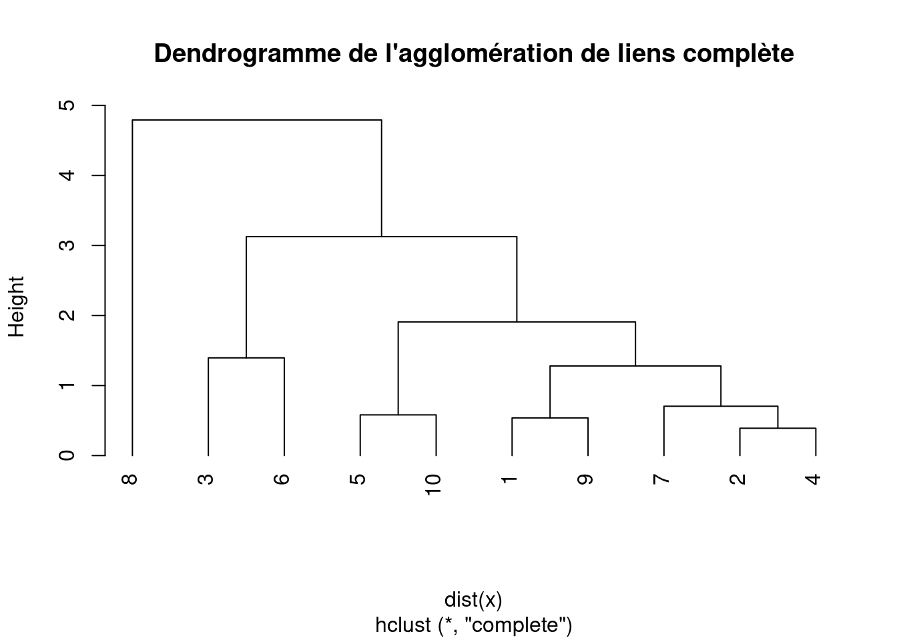
11.3 Méthode des groupes de paires non pondérés avec moyenne arithmétique (UPGMA)
Un autre algorithme de regroupement hiérarchique couramment utilisé en bioinformatique et en biologie évolutive est la méthode des groupes de paires non pondérées avec moyenne arithmétique (UPGMA).
Les étapes de l’algorithme UPGMA sont les suivantes
- Commencez par assigner chaque point de données à son propre groupe.
- Calculer les distances par paire entre tous les groupes sur la base de la métrique de distance choisie, telle que la distance euclidienne, la distance de Manhattan ou la corrélation de Pearson.
- Trouver les deux grappes les plus proches sur la base des distances par paire et les fusionner en une seule grappe. La distance entre les deux groupes est calculée comme la moyenne des distances par paire entre leurs membres.
- Mettre à jour les distances par paire entre la nouvelle grappe et toutes les grappes restantes. La distance entre la nouvelle grappe et toute autre grappe est calculée comme la moyenne des distances par paire entre les membres de la nouvelle grappe et les membres de l’autre grappe.
- Répétez les étapes 3 et 4 jusqu’à ce que tous les points de données appartiennent à un seul groupe.
# effectuer un clustering par la méthode des groupes de
# paires non pondérés avec moyenne arithmétique
hc <- hclust(dist(x), method = "average")
# tracer le dendrogramme
plot(hc, main = "Dendrogramme de la méthode du groupe de paires non pondéré avec la moyenne arithmétique \nAgglomerative Clustering",
hang = -1)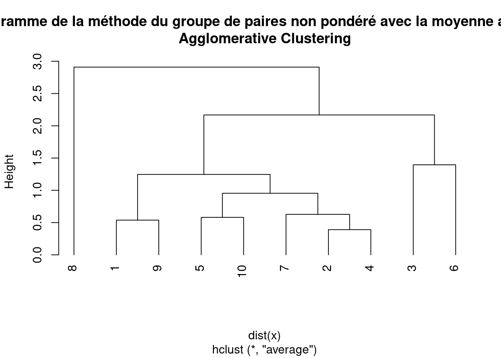
L’algorithme UPGMA suppose un taux d’évolution constant et est donc souvent utilisé pour construire des arbres phylogénétiques à partir de données génétiques ou moléculaires. Le résultat de l’algorithme UPGMA est un dendrogramme, qui montre la structure hiérarchique des groupes.
Une des limites de l’UPGMA est qu’elle peut être sensible aux valeurs aberrantes et qu’elle peut produire des résultats biaisés s’il existe des modèles non aléatoires de données manquantes ou d’évolution convergente. En outre, il s’agit d’une méthode non pondérée, ce qui signifie qu’elle suppose que tous les points de données ont la même importance, ce qui n’est pas toujours le cas.
11.4 Méthode des groupes de paires pondérés avec moyenne arithmétique (WPGMA)
La méthode des groupes de paires pondérés avec moyenne arithmétique (WPGMA) est similaire à la méthode UPGMA, mais elle prend en compte le poids des observations (par exemple, lorsque certaines observations sont plus importantes que d’autres). L’algorithme fonctionne comme suit
- Commencez par assigner chaque point de données à sa propre grappe.
- Calculer les distances par paire entre tous les groupes sur la base de la métrique de distance choisie, telle que la distance euclidienne, la distance de Manhattan ou la corrélation de Pearson.
- Trouver les deux grappes les plus proches sur la base des distances par paire et les fusionner en une seule grappe. La distance entre les deux grappes est calculée comme la moyenne des distances par paire entre leurs membres, pondérées par leurs poids respectifs.
- Mettre à jour les distances par paire entre la nouvelle grappe et toutes les grappes restantes. La distance entre la nouvelle grappe et toute autre grappe est calculée comme la moyenne des distances par paire entre les membres de la nouvelle grappe et les membres de l’autre grappe, pondérées par leurs poids respectifs.
- Répétez les étapes 3 et 4 jusqu’à ce que tous les points de données appartiennent à un seul groupe.
# exécuter la méthode des groupes de paires pondérés avec
# la moyenne arithmétique du clustering
hc <- hclust(dist(x), method = "mcquitty")
# trace le dendrogramme
plot(hc, main = "Dendrogramme de la méthode des groupes de paires pondérées avec le clustering agglomératif à moyenne arithmétique",
hang = -1)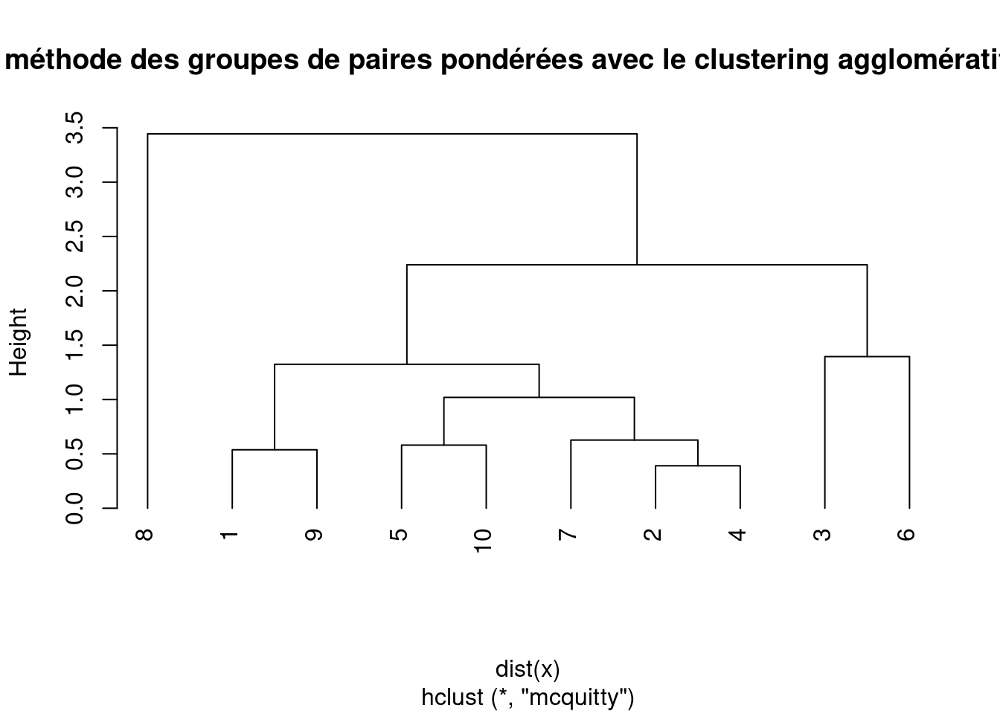
11.5 Variance minimale de Ward
La méthode de variance minimale de Ward est un algorithme de regroupement hiérarchique qui vise à minimiser la variance au sein de chaque groupe en fusionnant les groupes qui minimisent l’augmentation de la somme totale des distances au carré. L’algorithme fonctionne comme suit
- Commencez par assigner chaque point de données à sa propre grappe.
- Calculer la distance entre chaque paire de grappes à l’aide d’une mesure de distance choisie, telle que la distance euclidienne ou la distance de Manhattan.
- Fusionnez les deux grappes qui minimisent l’augmentation de la somme totale des distances au carré. L’augmentation de la somme des distances quadratiques est calculée comme la somme des distances quadratiques à l’intérieur de chaque grappe plus la distance quadratique entre les centroïdes des deux grappes multipliée par le nombre de points de données dans chaque grappe.
- Calculer la distance entre la nouvelle grappe et toutes les grappes restantes à l’aide de la métrique de distance choisie.
- Répétez les étapes 3 et 4 jusqu’à ce que tous les points de données appartiennent à une seule grappe.
La méthode de Ward est souvent préférée lorsque les données contiennent des grappes de tailles et de densités différentes. Le résultat de la méthode de Ward est un dendrogramme qui montre la structure hiérarchique des grappes.
La méthode de Ward est sensible aux valeurs aberrantes et peut produire des résultats biaisés si les données manquantes ne sont pas aléatoires ou si les hypothèses sous-jacentes de normalité et d’égalité des variances ne sont pas respectées.
La méthode de la variance minimale de Ward peut être formulée de différentes manières, ce qui donne lieu à des variantes connues sous les noms de Ward D et Ward D2.
Ward D utilise la somme des distances au carré comme critère à minimiser lors de la fusion des grappes, ce qui équivaut à minimiser l’augmentation de la somme des écarts au carré par rapport à la moyenne de la grappe combinée.
# effectuer le regroupement à variance minimale de Ward
hc <- hclust(dist(x), method = "ward.D")
# tracer le dendrogramme
plot(hc, main = "Dendrogramme de \nWard's minimum variance Agglomerative Clustering",
hang = -1)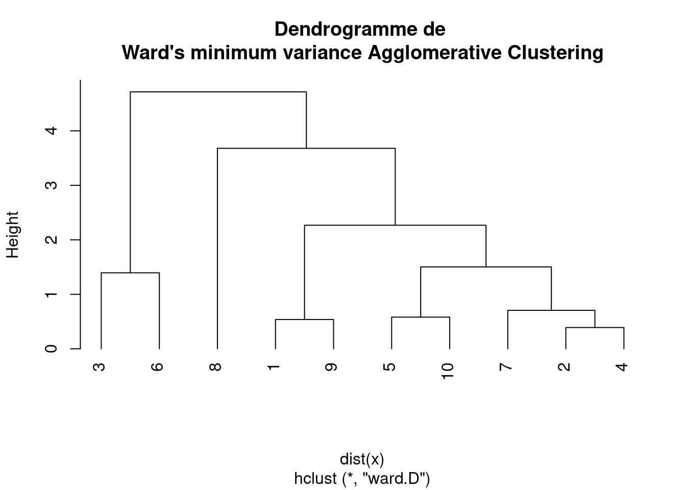
D’autre part, Ward D2 utilise la somme des écarts quadratiques par rapport au centroïde comme critère à minimiser lors de la fusion des grappes, ce qui équivaut à minimiser l’augmentation de la somme des écarts quadratiques par rapport au centroïde de la grappe combinée.
# effectuer le regroupement à variance minimale de Ward
hc <- hclust(dist(x), method = "ward.D2")
# tracer le dendrogramme
plot(hc, main = "Dendrogramme de \nWard's D2 minimum variance Agglomerative Clustering",
hang = -1)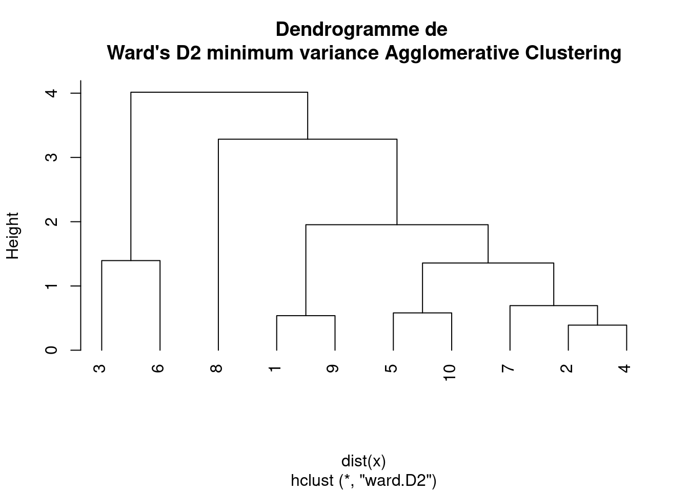
En d’autres termes, Ward D2 prend en compte la distance entre les centroïdes des grappes fusionnées, tandis que Ward D prend en compte la distance entre les points de données individuels et la moyenne de la grappe fusionnée.
Empiriquement, Ward D2 tend à produire des grappes plus compactes et sphériques, tandis que Ward D peut être plus sensible aux valeurs aberrantes et peut produire des grappes allongées ou de forme irrégulière. Toutefois, le choix de Ward D ou Ward D2 peut dépendre des caractéristiques spécifiques des données et de la question de recherche.
11.6 Décider des points de coupure
Le choix du point de coupure pour la prise en compte des groupes de grappes est une étape importante de l’analyse hiérarchique par grappes. Le point de coupure détermine le nombre de grappes à prendre en compte et peut avoir un impact significatif sur l’interprétation des résultats.
Voici quelques méthodes courantes pour déterminer le point de coupure :
- Inspection visuelle du dendrogramme : Une approche consiste à inspecter visuellement le dendrogramme et à identifier un point où les branches commencent à devenir longues et clairsemées. Ce point représente un point de rupture naturel dans la hiérarchie et peut être utilisé comme point de coupure.
- La méthode du coude : La méthode du coude consiste à tracer une mesure de la qualité des grappes, telle que la somme des carrés à l’intérieur d’une grappe, en fonction du nombre de grappes. Le point où le tracé commence à se stabiliser est considéré comme le point d’inflexion et peut être utilisé comme point de coupure.
- Statistique de l’écart : la statistique de l’écart compare la somme des carrés à l’intérieur des grappes pour les données réelles à la somme des carrés à l’intérieur des grappes attendue pour une distribution de référence nulle. Le nombre optimal de grappes est celui qui présente la statistique d’écart la plus élevée.
- Connaissances spécifiques au domaine : Dans certains cas, des connaissances spécifiques au domaine ou des recherches antérieures peuvent fournir des indications sur le nombre approprié de grappes à considérer.
11.7 Jouer avec des données réelles : les données sur les espèces de poissons du Doubs
Comparons les méthodes de clustering à lien unique et à lien complet en utilisant les données sur les espèces de poissons du Doubs.
Les données sur les espèces ont déjà été transformées par Hellinger. L’analyse de cluster nécessitant des indices de similarité ou de dissimilarité, la première étape consistera à générer les indices de distance de Hellinger.
# Génère la matrice de distance à partir des données
# transformées de Hellinger
spe.dhel <- vegdist(spe.hel, method = "euclidean")
# Voir la différence entre les deux matrices
head(spe.hel) # Données d'espèces transformées par Hellinger## CHA TRU VAI LOC OMB BLA HOT TOX VAN CHE BAR SPI
## 1 0 1.0000000 0.0000000 0.0000000 0 0 0 0 0.0000000 0.0000000 0 0
## 2 0 0.6454972 0.5773503 0.5000000 0 0 0 0 0.0000000 0.0000000 0 0
## 3 0 0.5590170 0.5590170 0.5590170 0 0 0 0 0.0000000 0.0000000 0 0
## 4 0 0.4364358 0.4879500 0.4879500 0 0 0 0 0.0000000 0.2182179 0 0
## 5 0 0.2425356 0.2970443 0.2425356 0 0 0 0 0.3834825 0.2425356 0 0
## 6 0 0.3779645 0.4364358 0.4879500 0 0 0 0 0.2182179 0.3086067 0 0
## GOU BRO PER BOU PSO ROT CAR TAN BCO PCH GRE
## 1 0.0000000 0.0000000 0.0000000 0 0 0.0000000 0 0.0000000 0 0 0
## 2 0.0000000 0.0000000 0.0000000 0 0 0.0000000 0 0.0000000 0 0 0
## 3 0.0000000 0.2500000 0.0000000 0 0 0.0000000 0 0.0000000 0 0 0
## 4 0.2182179 0.3086067 0.3086067 0 0 0.0000000 0 0.2182179 0 0 0
## 5 0.2425356 0.3429972 0.3429972 0 0 0.2425356 0 0.2970443 0 0 0
## 6 0.2182179 0.2182179 0.2182179 0 0 0.0000000 0 0.3086067 0 0 0
## GAR BBO ABL ANG
## 1 0.0000000 0 0 0
## 2 0.0000000 0 0 0
## 3 0.0000000 0 0 0
## 4 0.0000000 0 0 0
## 5 0.3834825 0 0 0
## 6 0.2182179 0 0 0head(spe.dhel) # distances de Hellinger entre les sites## [1] 0.8420247 0.9391305 1.0616631 1.2308244 1.1153793 0.9391305Utilisez hclust() pour calculer les algorithmes de regroupement de liens simples et complets pour ces données :
spe.dhel.single <- hclust(spe.dhel, method = "single")
plot(spe.dhel.single)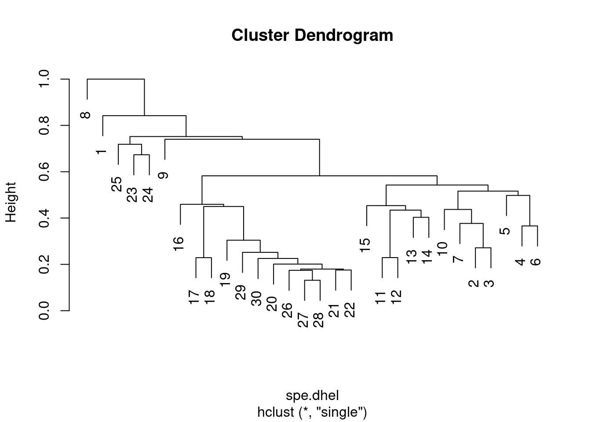
spe.dhel.complete <- hclust(spe.dhel, method = "complete")
plot(spe.dhel.complete)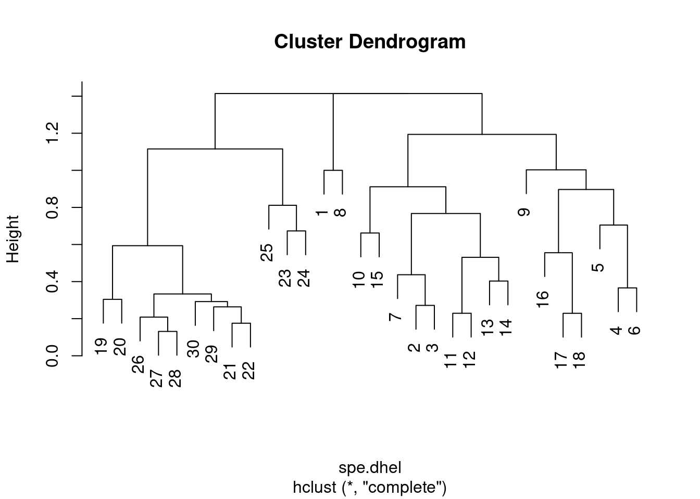
Y a-t-il de grandes différences entre les deux dendrogrammes ?
Dans le clustering à lien unique, des chaînes d’objets apparaissent (par exemple 19, 29, 30, 20, 26, etc.), alors que des groupes plus contrastés sont formés dans le clustering à lien complet.
Là encore, il est possible de générer un regroupement à variance minimale de Ward avec hclust(). Cependant, le dendogramme montre les distances au carré par défaut. Afin de comparer ce dendrogramme aux résultats des regroupements par liens simples et complets, il faut calculer la racine carrée des distances.
# Effectuer le clustering de variance minimale de Ward
spe.dhel.ward <- hclust(spe.dhel, method = "ward.D2")
plot(spe.dhel.ward)
# Reprendre le dendrogramme en utilisant les racines
# carrées des niveaux de fusion
spe.dhel.ward$height <- sqrt(spe.dhel.ward$height)
plot(spe.dhel.ward)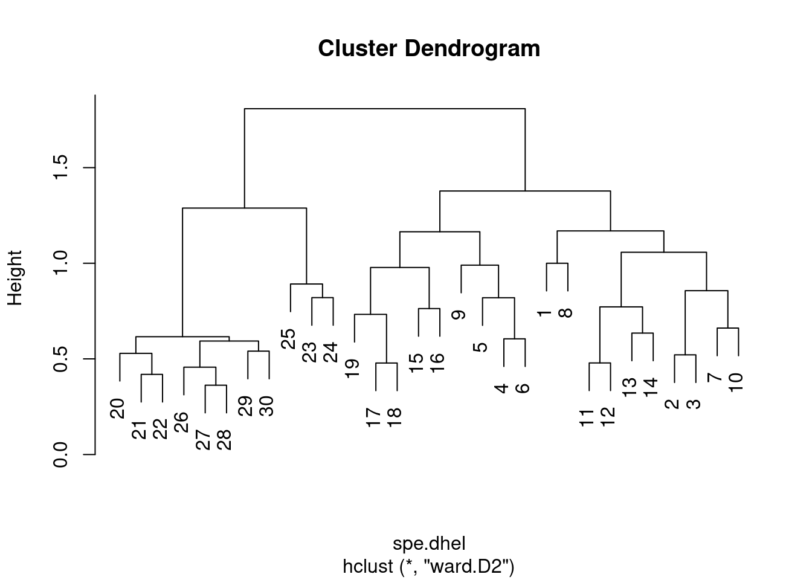
plot(spe.dhel.ward, hang = -1) # hang=-1 aligne tous les objets sur la même ligne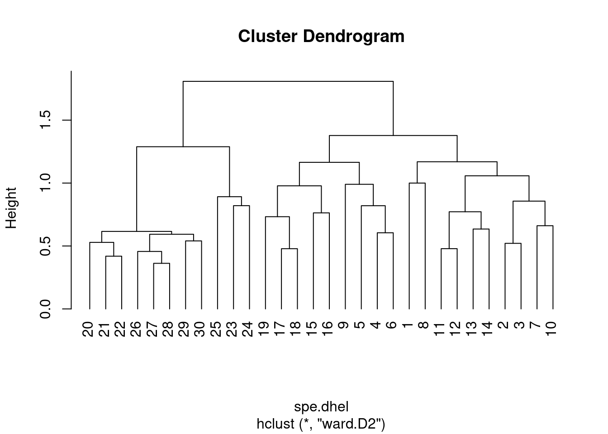
Il faut être prudent dans le choix d’une mesure d’association et d’une méthode de regroupement afin de traiter correctement un problème.
Qu’est-ce qui vous intéresse le plus : les gradients ? les contrastes entre les objets ?
En outre, les résultats doivent être interprétés en fonction des propriétés de la méthode utilisée. Si plusieurs méthodes semblent adaptées à une question écologique, il convient de les calculer toutes et de comparer les résultats.
Pour rappel, le clustering n’est pas une méthode statistique, mais d’autres mesures peuvent être prises pour identifier des clusters interprétatifs (par exemple, où couper l’arbre), ou pour calculer des statistiques de clustering. Le regroupement peut également être combiné à l’ordination afin de distinguer des groupes de sites. Cela dépasse le cadre de cet atelier, mais voir Borcard et al. 2011 pour plus de détails.
Nous allons maintenant nous intéresser aux méthodes d’ordination.
L’ordination est une méthode utilisée pour visualiser et explorer les relations entre les variables ou les observations dans un ensemble de données multivariées. L’objectif de l’ordination est de représenter les données dans un espace de dimension inférieure, tel qu’un graphique bidimensionnel ou tridimensionnel, tout en préservant la structure globale des données. L’ordination peut être utilisée pour explorer les modèles et les relations entre les variables ou les observations, pour identifier les variables ou les modèles importants dans les données, ou pour visualiser les résultats d’autres analyses.
Le premier groupe de méthodes d’ordination que nous allons étudier est celui des ordinations sans contrainte.